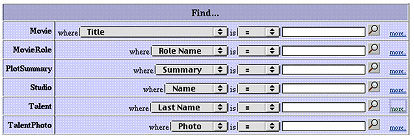

| PATH |

Once you have created a Direct to Web application using Project Builder and the WebObjects application wizard, and have compiled the resulting project files, you can launch the application by clicking Project Builder's Launch icon . The application pages are displayed in a web browser, where you can test the application's presentation of data and, with the WebAssistant enabled, modify the layout of that data.
To launch your application from Project Builder, click in the toolbar in Project Builder's main window.
Before you launch the application you might want to set some
command line options. For example, when running a Direct to Web
Application for deployment, you should turn on caching and disable
the WebAssistant (to prevent anyone from connecting to the application
using WebAssistant). To do this, set the -WOCachingEnabled and -D2WWebAssistantEnabled options,
respectively:
-WOCachingEnabled YES -D2WLiveAssistantEnabled
NO in the Launch Arguments area.For other command-line options for WebObjects applications,
such as
-WOPort, see Serving
WebObjects.
You can test the Direct to Web application using a web browser on a machine remote from the machine on which the application is running (that is, the server). When you launch the application, look in the console output, which is displayed in the Launch panel, for the line containing application's URL.
Welcome to D2WTutorial! Opening application's URL in browser: http://localhost:1234/cgi-bin/WebObjects/D2WTutorial
Enter the URL in your browser, after substituting the host name of the server machine for "localhost". In fact, you can exclude every thing in the URL after the application port number. For example, if the server host name is "foobar" you would enter the following URL in the browser to load the WebObjects application:
http://foobar:1234/
When you launch your application, your web browser displays the Direct to Web login screen:
The login page is the default implementation of your Main
component, Main.wo. It
contains text fields to enter a name and password, as well as a
submit button (Login) and an Enable Assistant checkbox. To go to
the application's default first page, select Enable Assistant and
click Login button. You don't need to enter a name and password,
because the default application provides no password-checking logic.
If you don't select Enable Assistant before clicking Login, you
won't have access to the WebAssistant.
You can modify the login page (Main.wo)
to provide any behavior or appearance you like. For example, you
can add your own password-checking logic.
Besides the login page, there are nine types of dynamically-generated pages (or reusable components) in a Direct to Web application:
All pages in your application contain the standard Direct
to Web header (defined in MenuHeader.wo)
at the top of the page. This header provides a number of controls,
shown in Figure 2-1.
Figure 2-1 Header controls
For best results when navigating through a Direct to Web application, don't use your web browser's backtrack buttons. Instead:
Direct To Web has two kinds of pages for constructing queries on the properties of entities: a query-all page and a query page. When you log into a Direct To Web application, the query-all page is displayed first by default.
The query-all page enables you to construct a query on an attribute of a particular entity (queries on relationships are not allowed). To use this page, select a property from an entity's pop-up list, specify the comparison operator, type the string to search on and click the magnifying-glass button.
The query page, on the other hand, is tied to a particular entity but allows you to construct queries on relationships as well as attributes. The following example illustrates a query page:
The first column in the table lists the current entity's properties. The second column contains pop-up lists and text fields that let you enter values to construct queries on single and multiple properties. When you specify values for multiple properties, the query becomes the logical AND of the queries on the individual properties.
A property is either an attribute (a value stored directly in this entity's table) or a relationship (an association between this entity and another entity). For example, in the figure above, Title is an attribute and Studio is a relationship. You can use the WebAssistant to hide properties that you don't want users to see.
Note: Direct to
Web only displays properties that are class properties. In addition,
primary keys and attributes marked as the source of a relationship
are hidden by default.
Properties are represented in various ways. For example, in the figure, you enter a single string value for Title, while you enter a range of values for Date Released. You can change the representation of most properties using the WebAssistant. In particular, you may want to change how relationships are shown, since by default, you query them by specifying an ID, which is something the user is unlikely to know. See "Changing How Properties Are Displayed" for more information on the different ways of representing properties in your application's pages.
You can choose a string operator (starts with, contains, ends with, is, like, =, <>, <, <=, >, >=) and specify a string with optional special characters in query fields for string searches. For example, you could select "starts with" in the Movie entity's Title pop-up list and enter "sh" in the text field to search for all movies that begin with those characters. You can also use the "like" operator and enter a string with the asterisk character to indicate "all occurrences." For instance, you could enter "*love*" to return all movies that contain the substring "love". Alternatively you could select "contains" in the pop-up list and enter "love" to return the same movies.
In the Movie query, to get a list of all dramas released in the 1990's, you would:
The results are displayed in a list page; see "List Pages and Select Components".
To clear the query page, click Build Query.
A list page displays a table showing multiple records of an entity. List pages are used to display the results of a query, or to show the records satisfying a to-many relationship in another list or inspect page.
![[image: ../Art/listpage.gif]](../Art/listpage.gif)
Each row in the table represents a record. By default, a batch of ten records are shown in a page. To change the batch size, type a number in the "Display _ Items" field and press Return or Enter. To display additional records in either direction, click the triangle buttons or enter the page number you want to go to.
Each column in the list represents one of the entity's properties. By default, all properties are shown in alphabetical order. You can hide columns and change their order by using the WebAssistant; see "Customizing Your Application With the WebAssistant".
The symbols to the right of attribute names represent their sort order:
To change the sort order for any attribute, click the title to cycle between ascending, descending, and unsorted. By default, the records are sorted in ascending order by the attribute in the first column. You can specify up to three columns to sort on; the last one specified becomes the primary sort key.
For properties that represent relationships, an Inspect button appears in the cell by default (DisplayToManyFault).
Note: By default, the list page does not display relationships (including the Inspect buttons). You can configure the list page to display relationships using the WebAssistant; see "Customizing Your Application With the WebAssistant". |
When you click the Inspect button one of two things happen, depending on the type of relationship:
In the above example, the Movie entity's Studio relationship is a to-one relationship to the Studio entity. If you click the Inspect button, an inspect page appears for the Studio entity corresponding to the selected movie; see "Inspect and Edit Pages".
In the above example, the Movie entity's Roles relationship is a to-many relationship to the MovieRole entity. If you click the Inspect button, a list page appears, showing all the roles in the selected movie.
You can use the WebAssistant to display the related records directly in the table instead of with an Inspect button; see "Customizing Your Application With the WebAssistant".
The select component looks a lot like the list page, but instead of the Edit button there is a Select button. The select component occurs in multiple-component pages. In the edit-relationship page you click Select to add a record to a to-many relationship or select a record for a to-one relationship. In the master-detail page you click Select to select a record to edit. A select component looks like this:
Inspect pages and edit pages display the data for a single record of an entity. An edit page allows you to make changes to the record and save the changes, while an inspect page is read-only.
An inspect page looks like this
Note the buttons at the bottom of the page:
Also note the Movies property in the example above. You click the triangle to display the movies of this studio in a list, browser, or table, as in the following example:
This property is configured with the DisplayToManyTable component. For more on how this is done, see "Representation of Relationships".
An edit page (or edit component) looks like this:
It is similar to the inspect page, except that it has a Save button (for saving changes to the database) instead of an Edit button. If you click the Edit button next to the list of Movies, an edit-relationship page is displayed for editing the records in the to-many relationship. Edit components can occur in multiple-component pages, such as the master-detail page.
An edit-relationship page allows users to add records to a relationship and remove records from the relationship. Users typically come to these pages when they click an Edit button next to a relationship in an edit page. Edit-relationship pages consist of three separate components, of which two are shown at any one time. The first component lists the relationships of a particular property and contains several controls. In addition, a query component initially appears for locating another object to link to for that property. The third component, a select component, appears after you have specified a query and is discussed below.
This user interface facilitates the following tasks:
When a query is executed (assuming matching records are found) a select component replaces the query component.
To add a listed record to the to-many relationship, click the Select button. To construct a new query, click the Build Query button.
When you have finished editing a relationship, click the Return button under the browser to return to the original edit page. You must click the Save button in this page to store the changed relationship in the database.
Master-detail pages put a select component and an edit component on the same page, thereby allowing users to select and edit records without having to go to another page. The following is an example of a master-detail page:
To use a master-detail page, click Select next to a record in the list component. The record is displayed in an edit component. See "Inspect and Edit Pages" for usage information.
The master-detail page does not appear under Tasks in the WebAssistant (expert mode). This is because it is defined as a type of list page (BASMasterDetailPage, NEUMasterDetailPage, or WOLMasterDetail page depending on the look) of the list task.
© 2001 Apple Computer, Inc.